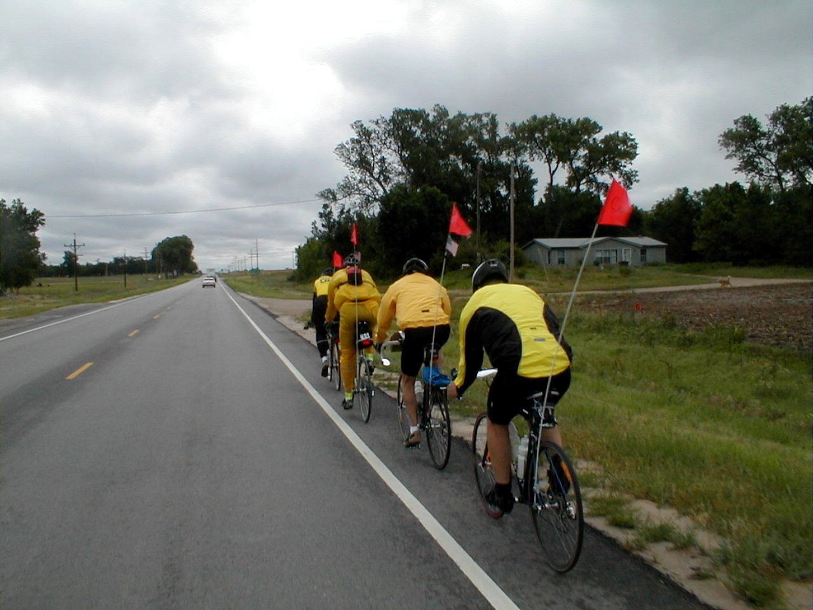

Day 22: June 3, Great Bend, KS to McPherson, KSPrevious Day - Home - Next Day Photo of the DayOur pace line: Phil, Carl, Bob P., Chris B., and me. Keegan's LogDay 22: June 3, Great Bend, KS to McPherson, KS Mileage: 65.80 milesWeather: Cold, Low overcast, Ridiculous Headwinds Vertical Climb: 400 feet>br> Riding Time: 5:30 According to some of the other riders, today made yesterday's winds seem like a joke. I was reminded of standing in our garage watching a storm blow through the trees, the way the leaves and branches bend and whistle as the winds blow. We knew from the very beginning today was going to be a grind. We left at 8:15, the schedule was pushed back an hour to accommodate the 'short' day. The announcement sheet also told us to bring our bathing suits with us, we would likely arrive before the rooms were ready and could use the extra time to cool off in the pool. It was around 60 degrees when we left, I was wearing a jacket and long tights, which I wore all day. We traveled a few miles in town, then headed for the open country roads. The winds were about 30 mph from directly ahead of us, not long after that we joined Chris B., we got a loose pace line going for some relief from the winds. We stopped by a mini-mart in Ellinwood for a break, Carl joined us when we left. Not too far along we met up with Bob P., the five of us set up a pace line where we each pulled for a half mile before dropping to the back. The miles still went slowly, but at least a pace line gives you something else to concentrate on. We all stopped at a gas station about 20 miles into the ride for another short break. We passed Chuck and Karen not long after the stop, Chuck joined the line and kept up for the rest of the day. The six of us rode to the first sag together, the sag was in a park in Lyons, Kansas. We stopped at the Ly-Kan hotel for a cinnamon roll just before the sag, the restaurant came highly recommended and we weren't disappointed. The park was only a few blocks away, we stopped only long enough to refill our water bottles before setting out to cover the last 30 miles of the route. Lynn C. joined us out of the sag, the line had now grown to seven, still with each of us pulling for a half mile. The last 30 miles had no major stops, we only took a few quick breaks on the side of the roads to rest our butts. The winds slowed a bit as we neared town, we finally made it to the hotel a little after 3:00. I took a hot shower to warm up, then we headed to Wal*Mart for a few goodies. Dinner was a huge buffet at the Sirloin Stockade, we all ate a lot to make up for energy spent on the road today. Tomorrow is another 'short' day, but we're a lot more likely to have some tailwinds. We were lucky not to have any rain today, it looks like the skies should remain clear during the day tomorrow too. We're also getting very close to the halfway point, already halfway through our trip, it's tough to believe. Phil's LogIt's an appropriate time for a definition. A "pace line" is a group of bicyclists all riding in a tight line. We do this to "cheat" the wind, but it isn't cheating, it is trying to escape some of the effects. We had a short ride today, only 64 miles. But it was murder. The skies were low, dark, and racing, from the east. I was dressed for rain, but we saw only a few drops I was wearing my rain jacket as we rode out of last night's motel, but the wind was causing it to balloon and sound like a luffing sail. Progress was slow. I stopped to take the jacket off and discovered that a the noise was also costing me 2 miles-per-hour. I was up to 8 mph. There were others riders just ahead. With three others, Keegan and I formed a pace line. The wind, at least 20 mph, was head on. The first rider in he pace line or "train" faces the wind and churns hard through it, "pulling the train". Those behind ride in disturbed air and find a much easier time of it, probably 30 - 40% reduction in effort. The front person churns away until tired, then they usually signal, pull off the front to the left, then slow and fall back to the caboose position. In time, we picked up more riders. we got up to eight. The "deal" becomes that the lead person would pull for 1/2 mile, then fall back. Some riders are strong and try to do the right thing by pulling harder and faster when in the lead. But invariably a gap opens leaving those at the start of the gap pulling to try to catch up. We decided that we wouldn't try to maintain any greater than 11 mph unless there was a lessening of the wind, trees breaking up the wind, or a downhill segment. There were few of these. Truthfully, riding in a train is not much fun. You are trying to maintain a position with your front wheel from 3 - 12 inches behind the rear wheel of the person ahead. Everyone is blown about by gusts, and the lead person is never able to maintain a perfectly steady speed. There are three things in your sight, the trailing circumference of the wheel ahead, their derailleur which you watch for shifting gears in anticipation of speed variations, and the person's back axle. And in your periphery you are looking for hand signals from the person ahead, signals warning you of a deteriorated surface, rocks, or glass or whatever. You rarely look about to admire the scenery, you just want to keep your position tight. The major threat of riding in a train is hitting the wheel of the person ahead of you. A touch throws you off balance and you can't correct to the side you need to. A hard touch will cause your downward rotating tire to grip the upward rotating tire of the person ahead, flipping your bike up and backward as the sticky tires stick to one another. Thankfully you'll usually take yourself out, but not the person you hit. But crashes at our age are not fun. but had we not rode in a pace line all day, we would still be out there fighting the wind. Tomorrow is another day just over 60 miles. We ride 23 miles east, then turn north toward Abilene and a rest day. The wind is predicted to be strong still but out of the south, so we hope that the second two thirds of the ride will be easy. We'll see. Cross your fingers for us. Kansas is relatively flat, interesting scenery but very repetitive. We hear a few old gasoline engines slowly but deeply chugging as the pump pulls crude from the earth, or lifts the saltwater dome off a natural gas deposit. And the treat in bird calls today was unmistakable, bob whites. I've set things up so that Chuck will read one of his stories, "around the campfire", around the campfire after dinner tomorrow night. That should be fun. Most of the people in this group seem to lead interesting lives, and it will be enjoyable to see life through Chuck's eyes and fingers. There's a pretty blond at the motel desk, Kelcie, young, and Trevor, our Canadian crew member has obviously taken a shine to her. He's showing her our route map which is always displayed on a tripod in the lobby, and showing her where he lives in Lakefield, Ontario, and where he goes to school in Halifax. Kelcie was to be named Kelly, but her mom liked a perfume called Cie. This is an interesting ride, fun, tough, with good people and great organization. I feel privileged to be a part. |
{kind=link}